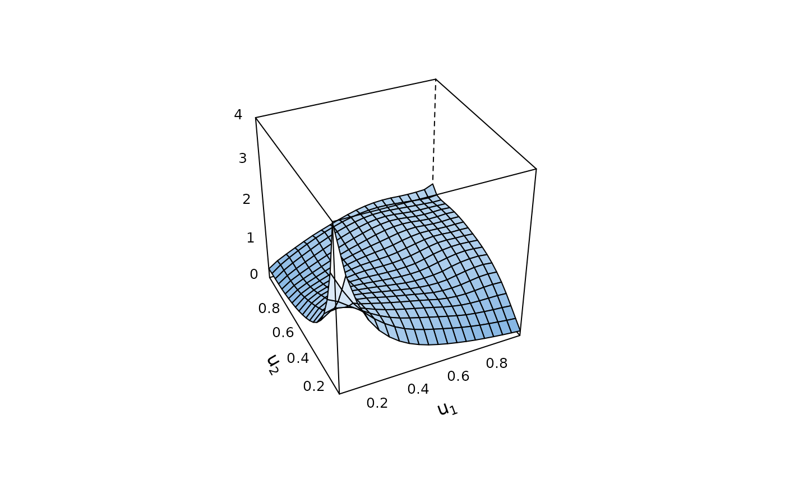
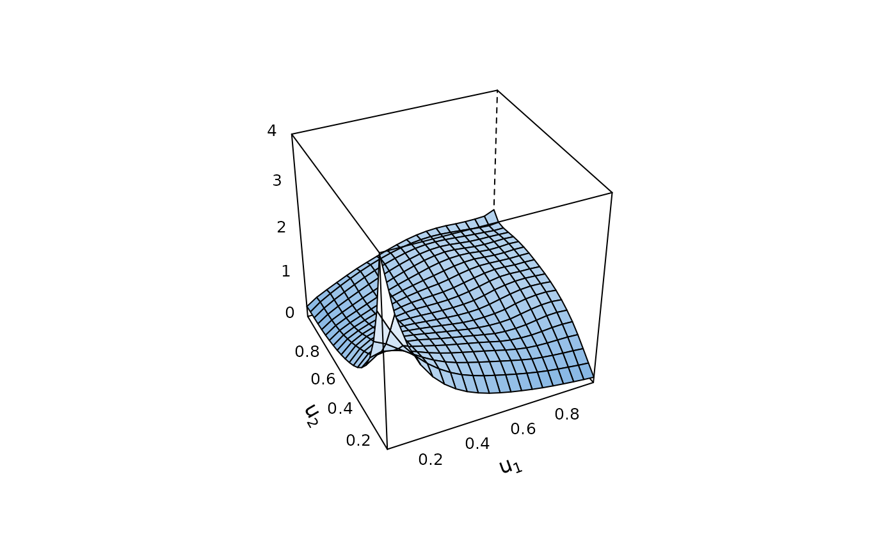
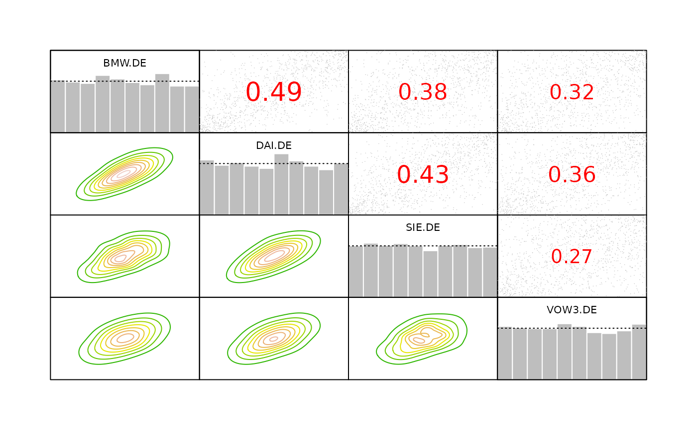
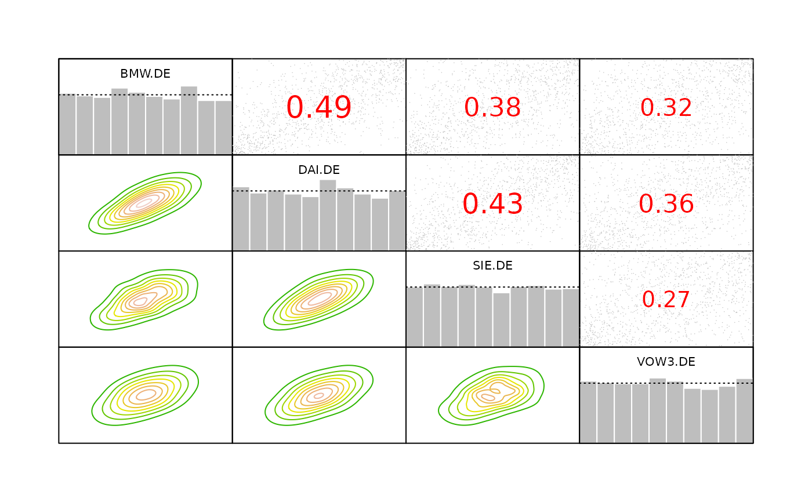

A kernel density estimate of the copula density is visualized. The function
provides the same options as plot.BiCop(). Further arguments can
be passed to kdecopula::kdecop() to modify the estimate. The
kdecopula::kdecopula-package() must be installed to use
this function.
BiCopKDE(u1, u2, type = "contour", margins, size, kde.pars = list(), ...)Arguments
- u1, u2
numeric vectors of equal length with values in \([0,1]\).
- type
plot type; either
"contour"or"surface"(partial matching is activated) for a contour or perspective/surface plot respectively.- margins
only relevant for types
"contour"and"surface"; options are:"unif"for the original copula density,"norm"for the transformed density with standard normal margins,"exp"with standard exponential margins, and"flexp"with flipped exponential margins. Default is"norm"fortype = "contour", and"unif"fortype = "surface"."norm"for the transformed density with standard normal margins (partial matching is activated). Default is"norm"fortype = "contour", and"unif"fortype = "surface".- size
integer; the plot is based on values on a
size x sizegrid; default is 100 fortype = "contour", and 25 fortype = "surface".- kde.pars
list of arguments passed to
kdecopula::kdecop().- ...
optional arguments passed to
contour()orwireframe().
Details
For further details on estimation see kdecopula::kdecop().
Examples
# simulate data from Joe copula
cop <- BiCop(3, tau = 0.3)
u <- BiCopSim(1000, cop)
contour(cop) # true contours
 # kernel contours with standard normal margins
BiCopKDE(u[, 1], u[, 2])
# kernel contours with standard normal margins
BiCopKDE(u[, 1], u[, 2])
 BiCopKDE(u[, 1], u[, 2], kde.pars = list(mult = 0.5)) # undersmooth
BiCopKDE(u[, 1], u[, 2], kde.pars = list(mult = 2)) # oversmooth
BiCopKDE(u[, 1], u[, 2], kde.pars = list(mult = 0.5)) # undersmooth
BiCopKDE(u[, 1], u[, 2], kde.pars = list(mult = 2)) # oversmooth
 # kernel density with uniform margins
BiCopKDE(u[, 1], u[, 2], type = "surface", zlim = c(0, 4))

plot(cop, zlim = c(0, 4)) # true density
# kernel density with uniform margins
BiCopKDE(u[, 1], u[, 2], type = "surface", zlim = c(0, 4))

plot(cop, zlim = c(0, 4)) # true density
 # kernel contours are also used in pairs.copuladata
data(daxreturns)
data <- as.copuladata(daxreturns)
pairs(data[c(4, 5, 14, 15)])

# kernel contours are also used in pairs.copuladata
data(daxreturns)
data <- as.copuladata(daxreturns)
pairs(data[c(4, 5, 14, 15)])
